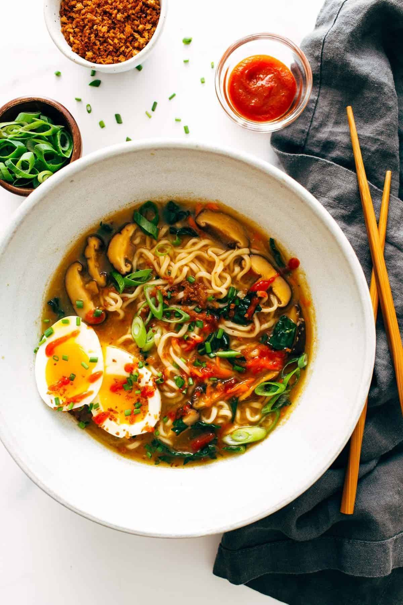

Home
Quick Homemade Ramen

Description
Fresh vegetables? Quick and easy homemade broth? A soft-boiled egg
and a pile of our favorite curly-cue packaged ramen noodles that
remind us of college? That's this homemade ramen.
Ingredients
- 1 tablespoon sesame oil
- 4 teaspoons grated garlic
- 3 teaspoons grated ginger
- 4 cups chicken broth
- 4 cups water
- 1 ounce dried shiitake mushrooms
- 2 packages instant ramen (noodles only!)
- 1/2 cup chopped scallions or chives
- 2 cup chopped kale (or spinach)
- 1 cups shredded carrots
- Sriracha to taste
- Crunchy golden panko crumbs for topping
Instructions
- Heat the sesame oil in a large skillet over medium low heat.
Add the garlic and ginger; stir fry for 2 minutes or until soft and fragrant.
- Add the broth and the water. Bring to a simmer; add the mushrooms and simmer
for 10 minutes or until the mushrooms have softened and the broth is flavorful.
- Add the instant noodles to the hot liquid and simmer for an additional 5 minutes
or until the noodles have softened. Add the scallions and stir to combine.
- Remove from heat, stir in the kale and carrots, and top with crunchy panko
crumbs and a soft-boiled egg (optional). Season with chili oil,
hot sauce, sesame oil, and/or soy sauce and salt to taste.